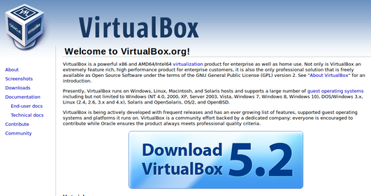
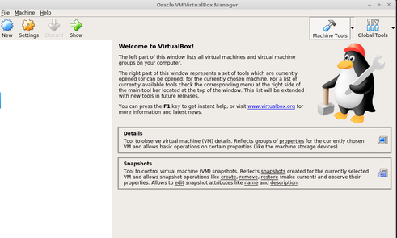
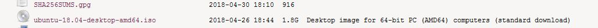
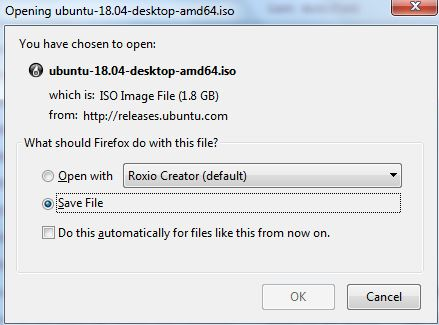
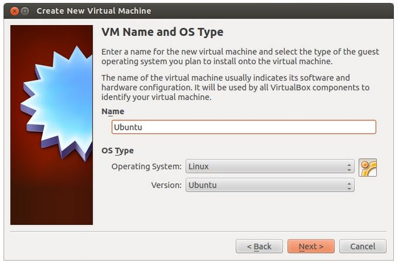
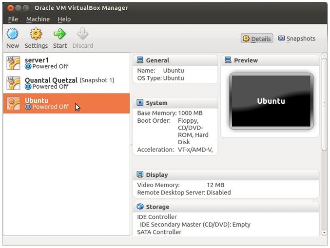
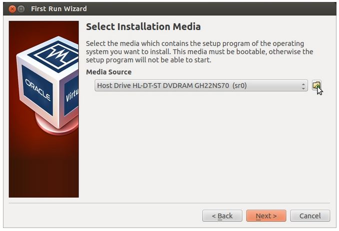
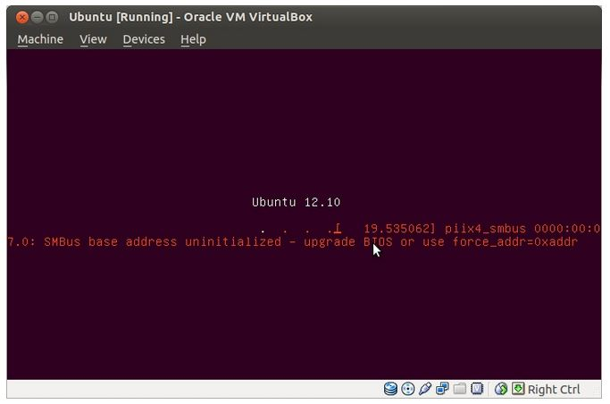
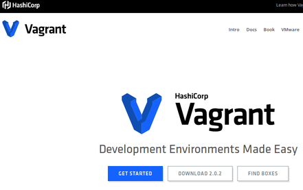

Virtualbox · Linux · Vagrant
The main purpose of this lab is to set up your laptop/workstation with the main software packages used in this module, specifically Virtualbox, Vagrant and Ubuntu Operating System. Please complete this lab before the on-site days in June as downloading and installing these packages can take some time. On successful completion, you should have a "platform independent" environment to complete the labs and assignments irrespective of the type of machine/operating system you use.
There is a "computer-systems" channel on Slack so if you've any issues with the lab you can interact with us there there and/or resolve it during the Computer Systems and Networks workshop on June 14th.

Virtualbox is a virtualisation hypervisor which provides an environment to create and provision virtual machine instances.
You will be using Virtualbox to explore machine virtualisation and operating systems. This and subsequent labs have been developed and tested using version 5.2.12. To keep your development environment consistent with the labs, you are advised to install this version.
Select the appropriate download and install Virtualbox 5.2.12 for your operating system:
Ensure that Virtualbox has installed correctly by starting the application as follows
Open a terminal window for your operating system
Type "virtualbox" at the prompt.
All going well you should see something similar to the following:

For more information about Virtualbox and installation, have a look around the website.
Version 18.04 was released in April 2018 and is guaranteed to have supported security and maintenance updates until April 2023
The Linux kernel on its own, is not an operating system, but rather a set of computer instructions, that enable communication between software applications and the data processing done at the hardware level.
The Ubuntu iso image file
Also:
You will actually be downloading an iso image file. ISO images are often used to distribute large programs over the internet due to the fact that all of the program's files can be neatly contained as a single file.
With this iso image, potentially you can:
Download the latest LTS version via the Ubuntu Releases page. I do not recommend to download from anywhere else
Find the standard iso image file for version 18.04 
Download this image to your desktop/preferred location 
Start VirtualBox and create a new virtual machine by clicking New
When the New Virtual Machine Wizard appears, click Next

Click Next until it show the vm storage size. Put how much space you need depending on your hard disk
As you go through, please feel free to use any of the online resources available: websites, chat rooms, for example askubuntu.com
Finish the wizard by clicking the Create button.
The New Virtual Machine Wizard will close and you will be brought back to VirtualBox Manager.
Select the Virtual Machine you've just created and click Start 
"First Run Wizard" will appear and click Next button.
On the second screen (as shown below), click at 'folder' icon and choose your Ubuntu iso directory. 
Select the location of your Ubuntu iso image file and click Next button.
In 'Summary' box, click Start button
This screen will appear when it start boot:

WELCOME TO UBUNTU!!!!!
As mentioned above, there are many many tutorials and resources available online to assist such as Installing Ubuntu inside Windows using VirtualBox - albeit this particular one is slightly out of date, the principles still remain largely the same.
Ubuntu also has a very complete Tutorial page.

Vagrant is a tool for building and managing virtual machine environments. Combined with hypervisor such as Virtualbox, Vagrant simplifies the set up, configuration and provisioning of environments containing several virtual devices. It also provides networking configuration capabilities such as forwarded ports, public network connections, and private networks.
Select the appropriate download for your machine (OS X, Windows, Linux):
If you have issues with the install, please visit www.vagrantup.com for guidance and support.
This and subsequent labs have been developed and tested using version 2.0.2. As before, You are advised to install this version.
To ensure that Vagrant has installed, open a terminal window and type vagrant -v at the prompt. All going well you should see something similar to the following:
$ vagrant -v
Vagrant 2.0.2Vagrant is preconfigured to work with VirtualBox. You will now use Vagrant to get and install virtual machine images (called boxes) preloaded with some stuff we'll be using in the labs. First lets initialise a Vagrant project to use a vagrant "box" prepared earlier.
Create a new folder on your laptop called vagrant-onsite-day
Open a terminal window in this folder and type "vagrant init frankwalsh/labvm" at the command prompt. You should see some output on the console confirming that a Vagrantfile has been placed in this directory and asking you to "vagrant up". Go ahead and enter the command "vagrant up" on at the prompt. You should see output similar to the following:
$ vagrant up
Bringing machine 'default' up with 'virtualbox' provider...
==> default: Importing base box 'frankwalsh/labvm'...
==> default: Matching MAC address for NAT networking...
==> default: Checking if box 'frankwalsh/labvm' is up to date...
==> default: Setting the name of the VM: vagrant-onsite-day_default_1527850779888_3870
==> default: Clearing any previously set network interfaces...
==> default: Preparing network interfaces based on configuration...
default: Adapter 1: nat....
....This could take some time to complete as it will need to download the frankwalsh/labvm box (approx 800MB) from the Vagrant cloud server.
To check all is good, type "vagrant ssh" at the command prompt to connect to the box (we'll talk about secure shell(SSH) later):
$ vagrant ssh
Welcome to Ubuntu 14.04.5 LTS (GNU/Linux 3.13.0-144-generic x86_64)
* Documentation: https://help.ubuntu.com/
System information as of Fri Jun 1 10:59:56 UTC 2018
System load: 0.31 Processes: 96
Usage of /: 5.4% of 39.34GB Users logged in: 0
Memory usage: 15% IP address for eth0: 10.0.2.15
Swap usage: 0%
....You now are connected to the virtual machine(VM) running in Virtualbox on your laptop(the host). There is no graphical user interface (we don't need it). We will continue from here in the on-site workshop on June 14th
Type "exit" at the command prompt. This will close the ssh session to the VM.
Then type "vagrant halt" at the command prompt to shut down the VM. All going well, you should see something similar to the following:
vagrant@hdip-labvm-2018:~$ exit
logout
Connection to 127.0.0.1 closed.
$ vagrant halt
==> default: Attempting graceful shutdown of VM...
$That's it, you're now ready for the on-site day on the 14th. See you then!